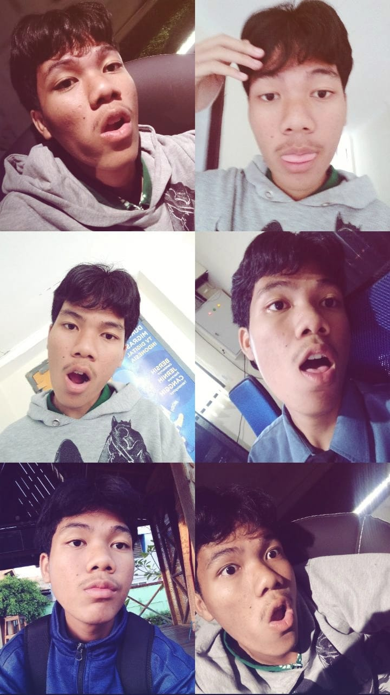
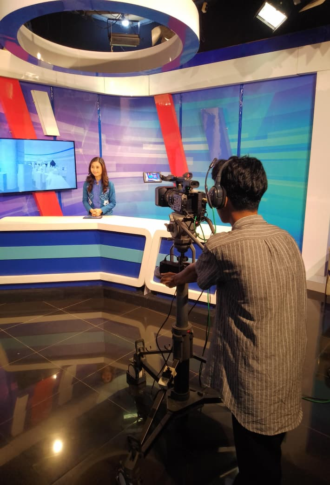
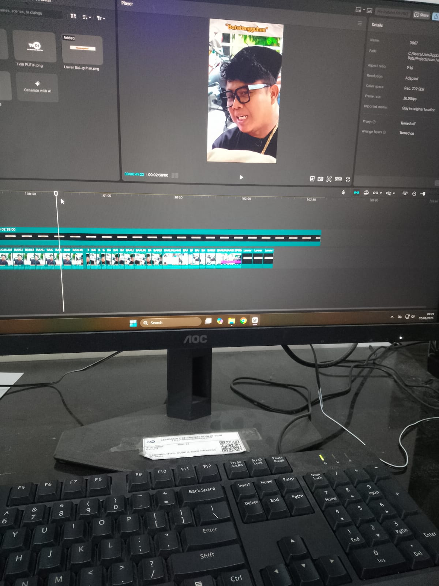
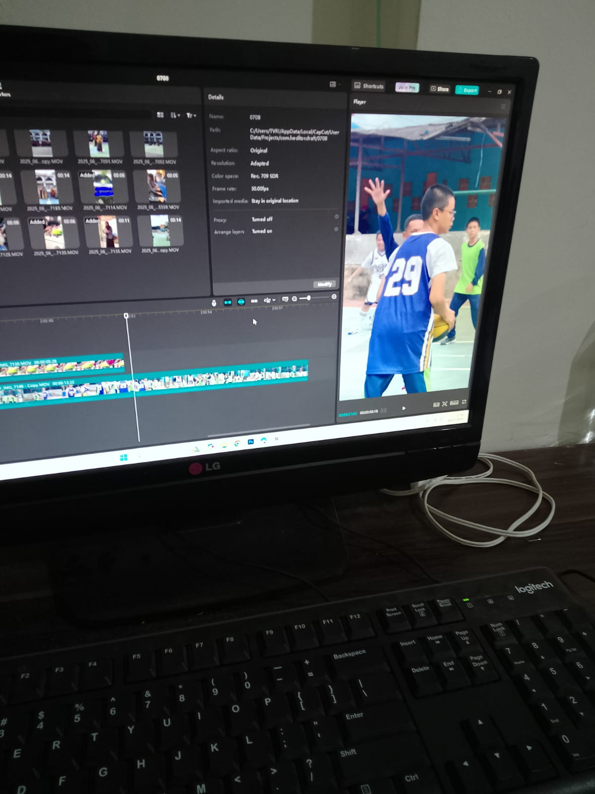

Marcellcuy
Halo, saya Marsel. Saya adalah siswa magang di Tim Komunikasi dan Media Baru (KMB) TVRI Kalimantan Selatan. Portofolio ini berisi pengalaman dan keterampilan yang saya peroleh selama Prakerin, yang saya harap dapat memberikan gambaran jelas tentang kontribusi saya di industri media.
Pengalaman Prakerin
Produksi Konten Siaran "Berita Pagi"
Terlibat dalam proses pra-produksi, syuting, dan pasca-produksi untuk segmen berita. Mempelajari alur kerja tim kreatif dan teknis.
Manajemen Media Sosial TVRI
Membantu tim KMB dalam merencanakan, membuat, dan mengunggah konten untuk akun media sosial resmi, seperti Instagram dan TikTok.
Pengembangan Podcast "Suara TVRI"
Berpartisipasi dalam ideasi konsep, penulisan skrip, hingga editing audio untuk episode podcast. Mendapatkan pemahaman tentang format media digital yang sedang tren.
Moment Spesial

Foto ini adalah moment paling berharga untuk saya selama prakerin TVRI Kalimantan Selatan sebagai Kameramen.

Mendokumentasikan sebagai KMB di balik layar produksi berita dengan tim TVRI.

Mendapatkan pengalaman berharga dalam mengoperasikan peralatan TVRI di Kantor sebagai Teams KMB.
Hubungi Saya
Tertarik untuk berkolaborasi atau sekadar ingin terhubung? Silakan hubungi saya melalui: